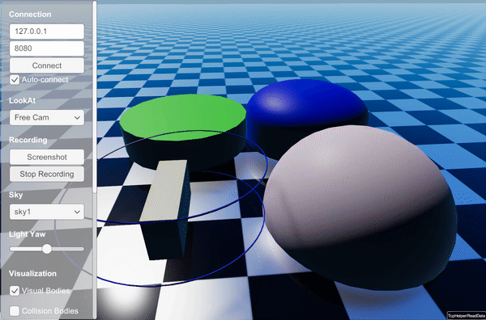

Raisim Server
raisim::RaisimServer serializes a raisim::World and streams it to a
client over TCP. The supported client is rayrai_tcp_viewer (see
Rayrai TCP Viewer). For older Unity or Unreal workflows, see
Legacy Integrations. For a comparison between server-based visualization
and in-process rayrai rendering, see Visualization.
Besides the world itself, RaisimServer can stream visual-only objects that
take no part in the simulation, such as visuals, polylines, visual articulated
systems and charts. The animation below shows them in a legacy visualizer; see
Examples for runnable examples.

Typical usage
Create the server, launch it, and advance the world through the thread-safe integration helper:
raisim::World world;
raisim::RaisimServer server(&world);
server.launchServer(8080);
for (;;) {
server.integrateWorldThreadSafe();
}
integrateWorldThreadSafe() locks the world mutex and applies the pending
client pose and force requests. It then decides from the pause and step state
whether this call advances the world. On an advancing call it applies the
interaction-wire and client forces. It runs the callback, if one was given,
integrates the world when allowed, and unlocks the mutex.
launchServer(port) binds its socket before it returns. If port is
already in use, the server tries the next 63 ports, logs
Port <requested> is in use; bound to port <actual> instead, and reports an
error only when none of them is free. getPort() returns the port actually
bound, and the discovery beacons advertise it (see Discovery beacons). The
server serves one client at a time and accepts the next one after the current
client disconnects.
Thread safety and lifecycle
The server reads the world state from a background thread. If you modify the
world from another thread while the server is running, hold the world mutex
(lockVisualizationServerMutex() / unlockVisualizationServerMutex())
to avoid races. integrateWorldThreadSafe() takes it for you.
hibernate() keeps the client connected but stops sending world updates,
and wakeup() resumes them. This does not pause the simulation; for that,
see Interactive sim control. Call killServer() to stop the server
thread, disconnect the client and close the socket. Call it before the server
object is destroyed.
Sensor measurements
RaisimServer can have the connected rayrai TCP viewer render the images of
RGB and depth cameras. When a MeasurementSource::MANUAL camera reaches its
update period, the regular scene reply includes its pose, lens model,
resolution and clipping range. The viewer renders the camera image and returns
BGRA pixels or metric depth values in a REQUEST_SENSOR_UPDATE frame. The
server validates every entry before it replaces sensor buffers and updates
timestamps.
IMU and spinning LiDAR measurements are always computed by RaiSim; their
metadata is streamed for inspection, but the viewer does not return samples
for them. Use MeasurementSource::RAISIM for RaiSim-computed sensors, and
manual RGB/depth cameras when the connected viewer should render the image. See
RGB/depth sensor round trip on the TCP viewer page.
Streamed scene notes
Spatial tendons, including wires added with
addStiffWire,addCompliantWireoraddCustomWire, are streamed as polylines. The TCP viewer includes them in the camera images it renders for the server.An object whose appearance is
"hidden"or"invisible"(case-insensitive) is still streamed, but rayrai and the TCP viewer do not draw it and it cannot be selected.
Synchronous updates (optional)
processRequests() handles one request/response exchange with the
connected client. The thread started by launchServer() calls it in a loop,
so most programs never call it. A program that wants to serve the client from
its own loop instead skips launchServer() and uses setupSocket(),
acceptConnection(), waitForMessageFromClient() and
processRequests() directly; see
examples/src/server/synchronous_server_update.cpp. In this mode no discovery
beacons are sent, so the viewer must connect by host and port. A loop that
calls world.integrate() itself also never applies the client’s pause, step,
force, torque, pose or generalized-coordinate requests, which only
integrateWorldThreadSafe() applies.
processRequests() returns false if the client does not respond, uses
another protocol version, or sends a request frame the server rejects (see
Request validation).
Protocol versioning and deformable streaming
The TCP wire protocol is versioned. Each request starts with a protocol header that advertises the client’s feature bits. The server requires the client’s protocol version to equal its own and rejects unknown feature bits: it logs a warning and closes the connection rather than misparse the stream. The feature bits are:
PROTOCOL_FEATURE_EXPLICIT_HEADER: every request and reply starts with the explicit protocol version and feature header.PROTOCOL_FEATURE_DEFORMABLE_DELTA: deformable mesh topology is sent only at initialization or when the topology changes; normal frames send vertex positions only.PROTOCOL_FEATURE_SIM_CONTROL: when both ends advertise this bit, the client may pause, resume and step the simulation and push external forces, torques, body poses and articulated-system generalized coordinates. The server applies no authentication: if the connection is open, the client can drive the simulation. See Interactive sim control below.PROTOCOL_FEATURE_CONTACT_OBJECT_TAGS: each streamed contact identifies both participating objects, enabling per-object contact counts and plots.PROTOCOL_FEATURE_ACTUATOR_STATE: the detailed state of the selected articulated system also carries its actuators (see Actuators): motor parameters, the motor state of the last step, and the velocity and actuator torque of every driven joint. The viewer plots these in the selected object’s Actuators tab.PROTOCOL_FEATURE_SCENE_FILES: every reply carries the state of the world’s.rscenefile list, and the client may ask for the list and for file chunks (see Sharing a RaiSim Engine scene).
The rayrai TCP viewer negotiates all six bits automatically.
sendUpdateRequest() in rayrai/RaisimTcpCommon.hpp advertises every bit
the client build supports; a custom client that writes its own request frames
may advertise any subset (see Rayrai TCP Viewer).
Interactive sim control
When PROTOCOL_FEATURE_SIM_CONTROL is negotiated, a connected client such as
rayrai_tcp_viewer can drive the simulation instead of only observing it.
The viewer’s Objects tab has a Simulation row with icon buttons to pause
or resume, step one frame and step ten frames.
Client requests added by this feature:
CR_PAUSE/CR_RESUME: set or clear a pause flag thatintegrateWorldThreadSafe()checks. While paused,world_->integrate()is not called, but the network thread keeps streaming the state.CR_RESUMEalso drops queued steps.CR_STEP_N: queue N single steps to advance while paused.CR_APPLY_FORCE: apply an external force at a world-space point on a body. The server multiplies the force command by the body’s mass, so the command acts as an acceleration.CR_APPLY_TORQUE: apply an external torque on a body (not scaled by mass).CR_SET_POSE: teleport a single-body object to a position and a quaternion in (w, x, y, z) order.CR_SET_GC: set the generalized coordinate of an articulated system.
Scene-editing requests predate this feature and are accepted from any client
with the same protocol version, whether or not PROTOCOL_FEATURE_SIM_CONTROL
is negotiated: CR_SPAWN_* (box, sphere, cylinder, capsule, mesh,
articulated system, ground plane, PNG height map), CR_REMOVE_OBJECT (an
object or a spatial tendon, by visual tag), CR_SAVE_THE_WORLD (export the
world as XML), and the interaction wire CR_ATTACH_WIRE /
CR_DRAG_OBJECT. File paths in these requests are opened and written on the
server host.
There is no authentication or per-client authorization: once the connection is open, the client can issue any request negotiated by both ends, plus every scene-editing request. The bind address is the only access control the server provides:
raisim::RaisimServer server(&world);
server.setBindLoopbackOnly(false); // listen on all interfaces; call before launchServer()
server.launchServer();
Keep the default (127.0.0.1 only) for development. Open the bind to a wider
network only when you trust every host that can reach the port.
Your own simulation code can use the same pause and step state, for example to drive a headless server:
server.pauseSimulation();
// ... the world is not integrated while paused; state streaming keeps running ...
server.stepSimulation(10); // queue 10 single steps
// ... or resume completely ...
server.resumeSimulation();
if (server.isSimulationPaused()) { /* … */ }
Pose and generalized-coordinate requests are applied at the next
integrateWorldThreadSafe() call, also while paused. A force or torque
request starts or refreshes a client force that is held for 0.12 s of
simulation time and applied on every integration step until it expires. While
paused, the force can be refreshed, but it is not applied until a step or a
resume lets integrateWorldThreadSafe() integrate the world.
stepSimulation(N) queues N single steps; each paused
integrateWorldThreadSafe() call consumes one. Unlike CR_RESUME,
resumeSimulation() only clears the pause flag: steps queued earlier stay
queued and run the next time the simulation is paused.
Request validation
The server decodes and validates a whole request frame before applying any of it. It rejects the frame when a request contains, for example:
a non-finite number, or a quaternion that is zero or not of unit length;
a non-positive mass or dimension in a spawn request (a capsule’s height may be zero);
a file that does not exist on the server; height maps must be PNG, articulated systems URDF or XML, and meshes need a file extension;
a force or torque target that does not exist, or a body index that does not exist on a force, torque or wire target (a wire whose target no longer exists is simply detached);
a pose target that is not a single body, or a generalized-coordinate vector whose size does not match the articulated system;
a sim-control request on a connection that did not negotiate
PROTOCOL_FEATURE_SIM_CONTROL, or a step count outside 1 to 1,000,000;a
CR_SAVE_THE_WORLDrequest that is not the only request in its frame.
A rejected frame is logged as Rejecting malformed client frame: <reason>,
nothing from it is applied, and the client is disconnected. If a model file
passes validation but then fails to load, the server removes the objects that
frame had already spawned, logs the failure and disconnects the client.
Custom mutation under the world mutex
Programs that spawn, move or modify world objects every tick can pass a
callback to integrateWorldThreadSafe(). The callback runs under the world
mutex on every call, also while paused. It runs after the client requests and
forces are applied, and before world_->integrate() on calls that advance
the world:
for (int i = 0;; i++) {
server.integrateWorldThreadSafe([&]() {
if (i % 600 == 0) {
auto* ball = world.addSphere(0.1, 1.0);
ball->setPosition(0, -2, 0.8);
ball->setVelocity(0, 10, 0, 0, 0, 0);
}
});
}
The callback overload keeps all the pause, step, force and pose behavior of the
overload without arguments, so the viewer can still drive the simulation while
the program changes the world every tick. See
examples/src/server/basics/dynamic_object_addition.cpp and
examples/src/server/terrain/dynamic_heightmap.cpp for working uses, and
examples/src/server/sim_control_demo.cpp for a minimal scene to try the
viewer’s simulation controls on.
Viewer requests
The server can also ask the connected viewer to act. rayrai_tcp_viewer
carries these requests out on the next scene update (see Rayrai TCP Viewer):
requestSaveScreenshot(): save a PNG of the scene in the viewer’s output folder, as itsF12key does.startRecordingVideo(name)/stopRecordingVideo(): record the scene to the viewer’s output folder, using the file name and extension ofname(.mp4when it has none). A viewer withoutffmpegwrites numbered PNGs to<stem>_frames/in the output folder instead. The viewer ignores the request while a recording started in the viewer is running.setCameraPositionAndLookAt(pos, lookAt): place the viewer camera atpos, aimed at the pointlookAt.focusOn(object): frameobjectin the viewer and select it.
The viewer’s output folder is its --screenshot-dir or the folder chosen in
its Record tab. Screenshot and recording requests stored in a recorded
session are ignored when the session is replayed.
Default bind address
RaisimServer binds to 127.0.0.1 by default rather than INADDR_ANY,
which prevents accidental exposure on a shared LAN. To accept connections from
other machines, call this before launchServer():
server.setBindLoopbackOnly(false);
Treat the bind address as a security boundary: once the server is reachable from a wider network, any client on that network can pause, step, apply forces, spawn and remove objects. There is no token or authorization layer to fall back on.
Discovery beacons
While the server is running, RaisimServer advertises itself with a UDP
beacon once per second on port 59312. The beacon payload contains the
RaiSim TCP protocol version, TCP port, host name, executable name (on Linux;
other platforms send RaisimServer), bind mode (loopback or all),
and connection status. rayrai_tcp_viewer lists only beacons whose protocol
version equals its own, in the server table of a pane without a session and
in the endpoint popup of the Connection tab.
With the default loopback bind, beacons are sent only to 127.0.0.1. After
server.setBindLoopbackOnly(false), they are broadcast on the local network
so another machine can discover the server. Discovery is only a convenience
layer: clients may always connect directly to the TCP endpoint with
--connect host:port or equivalent custom-client code.
For Windows LAN use, allow both the TCP server port (8080 by default) and
UDP port 59312 through the firewall. If UDP broadcast is blocked, manual
TCP connection still works.
RaisimServer API
-
class RaisimServer
Streams a raisim::World (plus server-side visual-only objects and charts) over TCP to a visualizer such as the rayrai TCP viewer, and accepts interaction / sim-control requests (pause, step, force, pose) from it.
Typical use: construct with a World, call launchServer() (spawns one network thread), advance the simulation with integrateWorldThreadSafe(), and call killServer() before the server is destroyed. Only one client is served at a time.
Threading: the network thread reads the world and every visual container while holding the World mutex. Any other thread that mutates the world or adds/removes visuals while the server is running must hold lockVisualizationServerMutex() (integrateWorldThreadSafe() does this).
Security: there is no authentication. By default the server binds to 127.0.0.1 only; see setBindLoopbackOnly().
Public Types
-
enum ClientMessageType
Internal: message type sent by the client at the start of each request frame (wire format).
Values:
-
enumerator REQUEST_UPDATE
-
enumerator REQUEST_SENSOR_UPDATE
-
enumerator REQUEST_UPDATE
-
enum ServerMessageType
Internal: server message type (wire format).
Values:
-
enumerator UPDATE_ALL
-
enumerator No_MESSAGE
-
enumerator UPDATE_ALL
-
enum class ServerRequestType : int
One-shot requests the server sends to the viewer in the next frame. They are queued by startRecordingVideo(), stopRecordingVideo(), focusOn(), setCameraPositionAndLookAt() and requestSaveScreenshot(). (Wire format.)
Values:
-
enumerator NO_REQUEST
-
enumerator START_RECORD_VIDEO
-
enumerator STOP_RECORD_VIDEO
-
enumerator FOCUS_ON_SPECIFIC_OBJECT
-
enumerator SET_CAMERA_TO
-
enumerator GET_SCREEN_SHOT
-
enumerator SET_SCREEN_SIZE
-
enumerator NO_REQUEST
-
enum class ClientRequestType : int
Internal: requests a client can send to the server (wire format). The CR_SPAWN_*, CR_ATTACH_WIRE, CR_DRAG_OBJECT, CR_REMOVE_OBJECT and CR_SAVE_THE_WORLD requests are interactive editing commands; CR_PAUSE (100) to CR_SET_GC (106) are sim-control requests, accepted only when PROTOCOL_FEATURE_SIM_CONTROL was negotiated; CR_SCENE_MANIFEST (200) and CR_SCENE_FILE_CHUNK (201) need PROTOCOL_FEATURE_SCENE_FILES. Their payloads are listed next to each value in the source.
Values:
-
enumerator CR_SPAWN_BOX
-
enumerator CR_SPAWN_SPHERE
-
enumerator CR_SPAWN_CYLINDER
-
enumerator CR_SPAWN_CAPSULE
-
enumerator CR_SPAWN_HEIGHT_MAP
-
enumerator CR_SPAWN_MESH
-
enumerator CR_SPAWN_PLANE
-
enumerator CR_SPAWN_AS
-
enumerator CR_ATTACH_WIRE
-
enumerator CR_DRAG_OBJECT
-
enumerator CR_REMOVE_OBJECT
-
enumerator CR_SAVE_THE_WORLD
-
enumerator CR_PAUSE
-
enumerator CR_RESUME
-
enumerator CR_STEP_N
-
enumerator CR_APPLY_FORCE
-
enumerator CR_APPLY_TORQUE
-
enumerator CR_SET_POSE
-
enumerator CR_SET_GC
-
enumerator CR_SCENE_MANIFEST
-
enumerator CR_SCENE_FILE_CHUNK
-
enumerator CR_SPAWN_BOX
-
enum Status
Server state, sent in every frame header. STATUS_RENDERING streams the world; STATUS_HIBERNATING keeps the connection but sends no world update (see hibernate()); STATUS_TERMINATING tells the client to disconnect.
Values:
-
enumerator STATUS_RENDERING
-
enumerator STATUS_HIBERNATING
-
enumerator STATUS_TERMINATING
-
enumerator STATUS_RENDERING
-
enum Masking
Internal: visual category tag sent with each streamed object (wire format).
Values:
-
enumerator AS_VISUAL_OBJ
-
enumerator AS_COL_OBJ
-
enumerator SB_OBJ
-
enumerator VIS_OBJ
-
enumerator CONSTRAINTS
-
enumerator CONTACT_FORCE
-
enumerator CONTACT_POINT
-
enumerator EXT_FORCE
-
enumerator EXT_TORQUE
-
enumerator AS_VISUAL_OBJ
Public Functions
-
inline explicit RaisimServer(World *world)
Create a server for a world. Does not open a socket; call launchServer() to start serving. Allocates the send and receive buffers (32 MiB each).
- Parameters:
world – [in] the world to visualize. Not owned; it must outlive the server.
-
inline void setBindLoopbackOnly(bool loopbackOnly)
If true (default), the server only listens on 127.0.0.1. Set to false to listen on all interfaces (INADDR_ANY). This also changes discovery beacons from loopback to LAN broadcast. The bind address is the only access control the server provides — if you open it to the network, any reachable client can drive the sim. The bind address takes effect at the next setupSocket()/launchServer() call.
- Parameters:
loopbackOnly – [in] true to bind to 127.0.0.1 only, false to bind to all interfaces.
-
inline void setSceneFileSharing(bool enabled)
Share the files of a world built from a .rscene file with viewers (on by default). A viewer that does not find the scene file and its assets locally (at the server’s paths, in its resource directories or its download cache) asks its user, then downloads them and draws the scene as rayrai does locally. Only the files the scene uses are served: see raisim::rscene::referencedFiles(). Files edited while the server runs are hashed again for the next client. Share only trusted scenes: explicit absolute paths and parent references can expose files outside the scene directory, and extensions do not validate image contents.
- Parameters:
enabled – [in] false to report the scene’s files as unavailable
-
inline int getPort() const
The TCP port the server is actually listening on. If the requested port was already in use, setupSocket() walks forward to the next free port — call this after launchServer() to discover which port clients should connect to.
- Returns:
the bound port (8080 before any socket has been set up).
-
inline void pauseSimulation()
Pause the simulation. integrateWorldThreadSafe() will skip world_->integrate() while paused, unless a step has been queued (see stepSimulation()). Client pose-sets (CR_SET_POSE / CR_SET_GC) are still applied each tick; client forces are queued but only applied to bodies on ticks that actually step. A viewer with sim control can also pause the server (CR_PAUSE). Thread-safe to call from any thread.
-
inline void resumeSimulation()
Resume a paused simulation (see pauseSimulation()). Thread-safe.
-
inline bool isSimulationPaused() const
- Returns:
true if the simulation is paused, by pauseSimulation() or by the viewer. Thread-safe.
-
inline void stepSimulation(int n = 1)
Queue single-step integrations to run while paused. Each paused integrateWorldThreadSafe() call consumes one. Has no effect on an unpaused simulation other than leaving the steps queued for a later pause. Thread-safe.
- Parameters:
n – [in] number of steps to queue; values <= 0 are ignored.
-
inline void setupSocket(int port = 8080)
Create, bind and listen on the server socket so that acceptConnection() can accept clients. If the port is in use, the next ports are tried (up to 64 in total); getPort() reports the port actually bound. Binds to 127.0.0.1 unless setBindLoopbackOnly(false) was called. launchServer() calls this for you. On Linux/macOS a failure is fatal; on Windows it is printed and the function returns without a listening socket.
- Parameters:
port – [in] the first port number to try
-
inline void acceptConnection(int microseconds)
Wait for and accept a client connection. Only one client can be connected at a time. On success the visual tags of all objects are reset so the new client receives the full scene, which locks the World mutex. The server thread started by launchServer() calls this.
- Parameters:
microseconds – [in] the number of microseconds to wait for a connection from a client
-
inline void closeConnection() const
Close the listening server socket (not the client socket). For new connections, the port has to be set up again with setupSocket(). On Windows this also calls WSACleanup().
-
inline void launchServer(int port = 8080)
Bind the socket (see setupSocket()) and start the server thread, which accepts one client at a time and streams the world to it. Returns immediately after binding, so getPort() is valid afterwards. While running, the server emits UDP discovery beacons on port 59312 so rayrai_tcp_viewer can list compatible endpoints. Call killServer() before the server is destroyed; destroying it with the thread still running terminates the program (std::thread semantics).
- Parameters:
port – [in] the first port number to try
-
inline void integrateWorldThreadSafe()
Integrate the world while holding the World mutex, so the server thread never reads the world mid-step (otherwise, there can be a segfault). Honors pauseSimulation() / stepSimulation(): while paused the world is not advanced unless a single-step has been queued. Pose-sets pushed by clients are applied every call; the interaction wire force and client forces/torques are applied only when the world is actually stepped.
-
template<typename BeforeStep>
inline void integrateWorldThreadSafe(BeforeStep &&beforeStep) Like integrateWorldThreadSafe() but invokes the supplied callable under the world mutex after interaction/sim-control requests are applied and before
world_->integrate()runs. The callable is invoked on every call, including while paused (when no step follows). Use this when you need to spawn / move / modify world objects each tick — it keeps your mutation safely interleaved with the network thread while still honoring viewer pause/step/force/pose commands.- Template Parameters:
BeforeStep – callable with signature
void()- Parameters:
beforeStep – [in] callback invoked inside the locked region
-
inline void applyInteractionForce()
Apply the interaction-wire force (a spring set by the user dragging an object in the visualizer) as a constraint force on the attached body. This is automatically called in raisim::RaisimServer::integrateWorldThreadSafe on steps that advance the world. Caller must hold the World mutex.
-
inline void hibernate()
Hibernate the server. The client stays connected, but frames carry only the server state and no world update, and the server thread sleeps 100 ms between frames. Undo with wakeup(). Locks the World mutex.
-
inline void killServer()
Stop the server thread, disconnect the client and close the listening socket. Blocks until the thread has exited. Precondition: launchServer() was called and killServer() has not been called since; otherwise std::thread::join throws.
-
inline void lockVisualizationServerMutex()
Lock the World mutex so that the server thread cannot read from the world or the visual containers. Hold it while modifying the world or adding/removing visuals from a thread other than the one calling integrateWorldThreadSafe(). Equivalent to World::lockMutex(); not recursive, so do not call integrateWorldThreadSafe() while holding it.
-
inline void unlockVisualizationServerMutex()
Unlock the World mutex locked by lockVisualizationServerMutex(). Briefly sleeps if the server thread is waiting for the lock, so it gets a chance to acquire it.
-
inline bool isTerminateRequested()
- Returns:
true while killServer() is shutting the server thread down
-
inline ArticulatedSystemVisual *addVisualArticulatedSystem(const std::string &name, const std::string &urdfFile, double colorR = 0, double colorG = 0, double colorB = 0, double colorA = 0)
- Parameters:
name – [in] the name of the visual articulated system object
urdfFile – [in] the path to the urdf file
colorR – [in] the red value of the color (max=1)
colorG – [in] the green value of the color (max=1)
colorB – [in] the blue value of the color (max=1)
colorA – [in] the alpha value of the color (max=1)
- Returns:
the articulated system visual. Owned by the server; valid until removeVisualArticulatedSystem(). Add an articulated system without physics. Fatal if the name is already used. A color with alpha 0 (the default) keeps the colors defined in the model. If the server is running, hold lockVisualizationServerMutex() while calling this.
-
inline void removeVisualArticulatedSystem(ArticulatedSystemVisual *as)
Remove and delete a visual articulated system. The pointer is invalid afterwards. If the server is running, hold lockVisualizationServerMutex() while calling this.
- Parameters:
as – [in] ArticulatedSystemVisual to be removed (as returned by addVisualArticulatedSystem())
-
inline InstancedVisuals *addInstancedVisuals(const std::string &name, Shape::Type type, const Vec<3> &size, const Vec<4> &color1, const Vec<4> &color2)
- Parameters:
name – [in] the name of the instanced visual
type – [in] shape type for each instance
size – [in] base size for each instance
color1 – [in] first color used for interpolation
color2 – [in] second color used for interpolation
- Returns:
the instanced visuals. Owned by the server and never removed. Add a set of visual-only instances that share one shape. Fatal if the name is already used. If the server is running, hold lockVisualizationServerMutex() while calling this.
-
inline Visuals *addVisualSphere(const std::string &name, double radius, double colorR = 1, double colorG = 1, double colorB = 1, double colorA = 1, const std::string &material = "", bool glow = false, bool shadow = false)
- Parameters:
name – [in] the name of the visual object
radius – [in] radius of the sphere
colorR – [in] the red value of the color (max=1)
colorG – [in] the green value of the color (max=1)
colorB – [in] the blue value of the color (max=1)
colorA – [in] the alpha value of the color (max=1)
material – [in] ignored (not stored or transmitted)
glow – [in] to glow or not (not supported)
shadow – [in] to cast shadow or not (not supported)
- Returns:
the sphere visual. Owned by the server; valid until removeVisualObject(). Add a sphere without physics. Fatal if the name is already used. If the server is running, hold lockVisualizationServerMutex() while calling this.
-
inline Visuals *addVisualBox(const std::string &name, double xLength, double yLength, double zLength, double colorR = 1, double colorG = 1, double colorB = 1, double colorA = 1, const std::string &material = "", bool glow = false, bool shadow = false)
- Parameters:
name – [in] the name of the visual object
xLength – [in] length of the box
yLength – [in] width of the box
zLength – [in] height of the box
colorR – [in] the red value of the color (max=1)
colorG – [in] the green value of the color (max=1)
colorB – [in] the blue value of the color (max=1)
colorA – [in] the alpha value of the color (max=1)
material – [in] ignored (not stored or transmitted)
glow – [in] to glow or not (not supported)
shadow – [in] to cast shadow or not (not supported)
- Returns:
the box visual. Owned by the server; valid until removeVisualObject(). Add a box without physics. Fatal if the name is already used. If the server is running, hold lockVisualizationServerMutex() while calling this.
-
inline Visuals *addVisualCylinder(const std::string &name, double radius, double length, double colorR = 1, double colorG = 1, double colorB = 1, double colorA = 1, const std::string &material = "", bool glow = false, bool shadow = false)
- Parameters:
name – [in] the name of the visual object
radius – [in] radius of the cylinder
length – [in] length of the cylinder
colorR – [in] the red value of the color (max=1)
colorG – [in] the green value of the color (max=1)
colorB – [in] the blue value of the color (max=1)
colorA – [in] the alpha value of the color (max=1)
material – [in] ignored (not stored or transmitted)
glow – [in] to glow or not (not supported)
shadow – [in] to cast shadow or not (not supported)
- Returns:
the cylinder visual. Owned by the server; valid until removeVisualObject(). Add a cylinder without physics. Fatal if the name is already used. If the server is running, hold lockVisualizationServerMutex() while calling this.
-
inline Visuals *addVisualCapsule(const std::string &name, double radius, double length, double colorR = 1, double colorG = 1, double colorB = 1, double colorA = 1, const std::string &material = "", bool glow = false, bool shadow = false)
- Parameters:
name – [in] the name of the visual object
radius – [in] radius of the capsule
length – [in] length of the capsule
colorR – [in] the red value of the color (max=1)
colorG – [in] the green value of the color (max=1)
colorB – [in] the blue value of the color (max=1)
colorA – [in] the alpha value of the color (max=1)
material – [in] ignored (not stored or transmitted)
glow – [in] to glow or not (not supported)
shadow – [in] to cast shadow or not (not supported)
- Returns:
the capsule visual. Owned by the server; valid until removeVisualObject(). Add a capsule without physics. Fatal if the name is already used. If the server is running, hold lockVisualizationServerMutex() while calling this.
-
inline Visuals *addVisualMesh(const std::string &name, const std::string &file, const Vec<3> &scale = {1, 1, 1}, double colorR = 0, double colorG = 0, double colorB = 0, double colorA = -1, bool glow = false, bool shadow = false)
- Parameters:
name – [in] the name of the visual mesh object
file – [in] file name of the mesh
scale – [in] scale of the mesh
colorR – [in] the red value of the color (max=1)
colorG – [in] the green value of the color (max=1)
colorB – [in] the blue value of the color (max=1)
colorA – [in] the alpha value of the color (max=1). Ignore color when negative
glow – [in] to glow or not (not supported)
shadow – [in] to cast shadow or not (not supported)
- Returns:
the mesh visual (a VisualMesh). Owned by the server; valid until removeVisualObject(). Add a mesh from a file without physics. Fatal if the name is already used. If the server is running, hold lockVisualizationServerMutex() while calling this.
-
inline VisualMesh *addVisualMesh(const std::string &name, const std::vector<float> &vertexArray, const std::vector<uint8_t> &colorArray, const std::vector<int32_t> &indexArray, double colorR = 0, double colorG = 0, double colorB = 0, double colorA = 1, bool glow = false, bool shadow = false)
Add a mesh from raw vertex/color/index arrays without physics. Fatal if the name is already used or the array sizes are invalid. Update the geometry later with VisualMesh::updateMesh(). If the server is running, hold lockVisualizationServerMutex() while calling this.
- Parameters:
name – [in] the name of the visual mesh object
vertexArray – [in] array of vertices (x, y, z per vertex). Size must be a multiple of 3
colorArray – [in] array of per-vertex colors in RGB (0-255). Must have the same size as vertexArray
indexArray – [in] array of triangle indices. Size must be a multiple of 3
colorR – [in] red color value (if colorArray is empty)
colorG – [in] green color value (if colorArray is empty)
colorB – [in] blue color value (if colorArray is empty)
colorA – [in] alpha color value (if colorArray is empty)
glow – [in] to glow or not (not supported)
shadow – [in] to cast shadow or not (not supported)
- Returns:
the mesh visual. Owned by the server; valid until removeVisualObject().
-
inline Visuals *addVisualArrow(const std::string &name, double radius, double height, double colorR = 0, double colorG = 0, double colorB = 0, double colorA = -1, bool glow = false, bool shadow = false)
- Parameters:
name – [in] the name of the visual mesh object
radius – [in] radius of the arrow
height – [in] height of the arrow
colorR – [in] the red value of the color (max=1)
colorG – [in] the green value of the color (max=1)
colorB – [in] the blue value of the color (max=1)
colorA – [in] the alpha value of the color (max=1)
glow – [in] to glow or not (not supported)
shadow – [in] to cast shadow or not (not supported)
- Returns:
the arrow visual. Owned by the server; valid until removeVisualObject(). Add an arrow without physics. Fatal if the name is already used. If the server is running, hold lockVisualizationServerMutex() while calling this.
-
inline HeightMapVisual *addVisualHeightMap(const std::string &name, const std::string &fileName, double centerX, double centerY, double colorR = 0, double colorG = 0, double colorB = 0, double colorA = -1)
- Parameters:
name – [in] the name of the visual heightmap object
fileName – [in] the raisim text file which will be used to create the height map
centerX – [in] x coordinate of the center of the height map
centerY – [in] y coordinate of the center of the height map
colorR – [in] the red value of the color (max=1)
colorG – [in] the green value of the color (max=1)
colorB – [in] the blue value of the color (max=1)
colorA – [in] the alpha value of the color (max=1)
- Returns:
pointer to the created visual height map. Owned by the server; valid until removeVisualHeightMap(). The RGBA arguments are stored in HeightMapVisual::color, which the server currently does not transmit; color the terrain via HeightMapVisual::setColor(const std::vector<raisim::ColorRGB>&) or the HeightMap appearance instead. If the server is running, hold lockVisualizationServerMutex() while calling this.
-
inline HeightMapVisual *addVisualHeightMap(const std::string &name, const std::string &pngFileName, double centerX, double centerY, double xScale, double yScale, double heightScale, double heightOffset, double colorR = 0, double colorG = 0, double colorB = 0, double colorA = -1)
- Parameters:
name – [in] the name of the visual heightmap object
pngFileName – [in] the png file which will be used to create the height map
centerX – [in] x coordinate of the center of the height map
centerY – [in] y coordinate of the center of the height map
xScale – [in] x scale of the height map
yScale – [in] y scale of the height map
heightScale – [in] a png file (if 8-bit) has pixel values from 0 to 255. This parameter scales the pixel values to the actual height
heightOffset – [in] height of the 0-value pixel
colorR – [in] the red value of the color (max=1)
colorG – [in] the green value of the color (max=1)
colorB – [in] the blue value of the color (max=1)
colorA – [in] the alpha value of the color (max=1)
- Returns:
pointer to the created visual height map. Owned by the server; valid until removeVisualHeightMap(). The RGBA arguments are stored in HeightMapVisual::color, which the server currently does not transmit; color the terrain via HeightMapVisual::setColor(const std::vector<raisim::ColorRGB>&) or the HeightMap appearance instead. If the server is running, hold lockVisualizationServerMutex() while calling this.
-
inline HeightMapVisual *addVisualHeightMap(const std::string &name, double centerX, double centerY, TerrainProperties &terrainProperties, double colorR = 0, double colorG = 0, double colorB = 0, double colorA = -1)
- Parameters:
name – [in] the name of the visual heightmap object
centerX – [in] x coordinate of the center of the height map
centerY – [in] y coordinate of the center of the height map
terrainProperties – [in] perlin noise parameters which will be used to create the height map
colorR – [in] the red value of the color (max=1)
colorG – [in] the green value of the color (max=1)
colorB – [in] the blue value of the color (max=1)
colorA – [in] the alpha value of the color (max=1)
- Returns:
pointer to the created visual height map. Owned by the server; valid until removeVisualHeightMap(). The RGBA arguments are stored in HeightMapVisual::color, which the server currently does not transmit; color the terrain via HeightMapVisual::setColor(const std::vector<raisim::ColorRGB>&) or the HeightMap appearance instead. If the server is running, hold lockVisualizationServerMutex() while calling this.
-
inline HeightMapVisual *addVisualHeightMap(const std::string &name, size_t xSamples, size_t ysamples, double xSize, double ySize, double centerX, double centerY, const std::vector<double> &height, double colorR = 0, double colorG = 0, double colorB = 0, double colorA = -1)
- Parameters:
name – [in] the name of the visual heightmap object
xSamples – [in] how many points along x axis
ysamples – [in] how many points along y axis
xSize – [in] x width of the height map
ySize – [in] y length of the height map
centerX – [in] x coordinate of the center of the height map
centerY – [in] y coordinate of the center of the height map
height – [in] a vector of doubles representing heights. the size should be xSample X ySamples
colorR – [in] the red value of the color (max=1)
colorG – [in] the green value of the color (max=1)
colorB – [in] the blue value of the color (max=1)
colorA – [in] the alpha value of the color (max=1)
- Returns:
pointer to the created visual height map. Owned by the server; valid until removeVisualHeightMap(). The RGBA arguments are stored in HeightMapVisual::color, which the server currently does not transmit; color the terrain via HeightMapVisual::setColor(const std::vector<raisim::ColorRGB>&) or the HeightMap appearance instead. If the server is running, hold lockVisualizationServerMutex() while calling this.
-
inline HeightMapVisual *addVisualHeightMap(const std::string &name, const HeightMap *hm, double colorR = 0, double colorG = 0, double colorB = 0, double colorA = -1)
- Parameters:
name – [in] the name of the visual heightmap object
hm – [in] Another height map whose samples, size and center are copied. Fatal if null
colorR – [in] the red value of the color (max=1)
colorG – [in] the green value of the color (max=1)
colorB – [in] the blue value of the color (max=1)
colorA – [in] the alpha value of the color (max=1)
- Returns:
pointer to the created visual height map. Owned by the server; valid until removeVisualHeightMap(). The RGBA arguments are stored in HeightMapVisual::color, which the server currently does not transmit; color the terrain via HeightMapVisual::setColor(const std::vector<raisim::ColorRGB>&) or the HeightMap appearance instead. If the server is running, hold lockVisualizationServerMutex() while calling this.
-
inline void removeVisualHeightMap(HeightMapVisual *hm)
Remove and delete a visual height map. The pointer is invalid afterwards. If the server is running, hold lockVisualizationServerMutex() while calling this.
- Parameters:
hm – [in] HeightMapVisual to be removed (as returned by addVisualHeightMap())
-
inline PolyLine *addVisualPolyLine(const std::string &name)
- Parameters:
name – [in] the name of the polyline
- Returns:
the polyline. Owned by the server; valid until removeVisualPolyLine(). Add a polyline without physics. Fatal if the name is already used. If the server is running, hold lockVisualizationServerMutex() while calling this.
-
inline PointCloud *addPointCloud(const std::string name)
Add a point cloud. Fatal if the name is already used. If the server is running, hold lockVisualizationServerMutex() while calling this.
- Parameters:
name – [in] the name of the point cloud
- Returns:
the point cloud. Owned by the server; valid until removePointCloud().
-
inline void removePointCloud(const std::string &name)
- Parameters:
name – [in] the name of the point cloud to be removed Remove and delete an existing point cloud. Fatal if it does not exist. If the server is running, hold lockVisualizationServerMutex() while calling this.
-
inline PolyLine *getVisualPolyLine(const std::string &name)
- Parameters:
name – [in] the name of the polyline
- Returns:
the polyline (owned by the server). Fatal if it does not exist.
-
inline ArticulatedSystemVisual *getVisualArticulatedSystem(const std::string &name)
- Parameters:
name – [in] the name of the visual articulated system
- Returns:
the visual articulated system (owned by the server). Fatal if it does not exist.
-
inline HeightMapVisual *getVisualHeightMap(const std::string &name)
- Parameters:
name – [in] the name of the visual height map
- Returns:
the visual height map (owned by the server). Fatal if it does not exist.
-
inline void removeVisualPolyLine(const std::string &name)
- Parameters:
name – [in] the name of the polyline to be removed Remove and delete an existing polyline. Fatal if it does not exist. If the server is running, hold lockVisualizationServerMutex() while calling this.
-
inline Visuals *getVisualObject(const std::string &name)
- Parameters:
name – [in] the name of the visual object to be retrieved
- Returns:
the visual object (owned by the server). Fatal if it does not exist. Only finds objects created by addVisualSphere/Box/Cylinder/Capsule/Mesh/Arrow.
-
inline void removeVisualObject(const std::string &name)
- Parameters:
name – [in] the name of the visual object to be removed Remove and delete a visual object created by addVisualSphere/Box/Cylinder/Capsule/Mesh/Arrow. Fatal if it does not exist. If the server is running, hold lockVisualizationServerMutex() while calling this.
-
inline void startRecordingVideo(const std::string &videoName)
- Parameters:
videoName – [in] name of the video file to be saved. The videoName must be a valid file name (e.g., no spaces, ending in .mp4) Ask the connected visualizer to start recording a video. The request is queued and sent with the next frame; the visualizer chooses the output directory. The rayrai TCP viewer uses the file stem/extension, and writes a PNG sequence if no video encoder (ffmpeg) is available. Locks the World mutex.
-
inline void stopRecordingVideo()
Ask the visualizer to stop recording (queued for the next frame). Locks the World mutex.
-
inline void setCameraPositionAndLookAt(const Eigen::Vector3d &pos, const Eigen::Vector3d &lookAt)
- Parameters:
pos – [in] the position of the camera in world coordinates
lookAt – [in] the world-frame point the camera looks at (not a direction) Ask the visualizer to move its camera (queued for the next frame). Locks the World mutex.
-
inline void focusOn(raisim::Object *obj)
- Parameters:
obj – [in] the object to look at. Fatal if null; ignored if it is not in the world. Ask the visualizer to focus its camera on the object (queued for the next frame). Locks the World mutex.
-
inline bool isConnected() const
- Returns:
true if a client is currently connected
-
inline bool waitForMessageFromClient(int seconds)
Internal: wait until the connected client socket is readable. Used by the server thread before every receive.
- Parameters:
seconds – [in] the number of seconds to wait for the client (on Windows the timeout is fixed at about 20 s and this value is only used in the warning message)
- Returns:
true if data from the client is available, false on timeout or error
-
inline bool waitForMessageToClient(int seconds)
Internal: wait until the connected client socket is writable. Used by the server thread before sending.
- Parameters:
seconds – [in] the number of seconds to wait (on Windows the timeout is fixed at about 20 s and this value is only used in the warning message)
- Returns:
true if the socket is writable, false on timeout or error
-
inline bool needsSensorUpdate()
Check whether a manual RGB/depth camera is due for an update from the visualizer.
- Returns:
true when at least one supported camera needs an update
-
inline bool processRequests()
Synchronous update method, called repeatedly by the server thread. Receive a request from the client, process it and return the requested data to the client. Locks the World mutex while applying requests and serializing the world. Malformed or oversized frames and exceptions from request handling are caught and reported as failure. The method return false if 1) the client failed to respond 2) the client protocol version is different 3) the client refused to receive the data 4) the client did not send the sensor data in time
- Returns:
if succeeded or not.
-
inline bool waitForNewClients(int microseconds)
Wait until a client is waiting to be accepted on the listening socket.
- Parameters:
microseconds – [in] how long to wait for a new client (negative waits indefinitely on Linux/macOS)
- Returns:
if a new client was found or not
-
inline void requestSaveScreenshot()
Ask the visualizer to save a screenshot (queued for the next frame; the directory is chosen by the visualizer). Locks the World mutex.
-
inline TimeSeriesGraph *addTimeSeriesGraph(std::string title, std::vector<std::string> names, std::string xAxis, std::string yAxis)
Only works with RaisimUnreal. Please read the “atlas” example to see how it works. Fatal if a chart with the same title exists. If the server is running, hold lockVisualizationServerMutex() while calling this.
- Parameters:
title – [in] title of the chart, also its unique key
names – [in] name of the data curves to be plotted
xAxis – [in] title of the x-axis
yAxis – [in] title of the y-axis
- Returns:
pointer to the created Time Series Graph. Owned by the server and never removed.
-
inline BarChart *addBarChart(std::string title, std::vector<std::string> names)
Only works with RaisimUnreal. Please read the “atlas” example to see how it works. Fatal if a chart with the same title exists. If the server is running, hold lockVisualizationServerMutex() while calling this.
- Parameters:
title – [in] title of the chart, also its unique key
names – [in] name of the data histogram to be plotted
- Returns:
pointer to the created Bar Chart. Owned by the server and never removed.
Public Static Attributes
-
static int SEND_BUFFER_SIZE
Capacity in bytes (32 MiB) of one outgoing frame. A frame that would exceed it is rejected and the current client is disconnected.
-
static int MAXIMUM_PACKET_SIZE
Internal: size in bytes of a scratch buffer. Not a limit on frame size.
-
static int RECEIVE_BUFFER_SIZE
Capacity in bytes (32 MiB) of one incoming client frame. Larger frames are dropped and the client is disconnected.
-
static uint64_t PROTOCOL_FEATURE_EXPLICIT_HEADER
Internal protocol feature bit, negotiated with the client (wire format).
-
static uint64_t PROTOCOL_FEATURE_DEFORMABLE_DELTA
Internal protocol feature bit, negotiated with the client (wire format).
-
static uint64_t PROTOCOL_FEATURE_SIM_CONTROL
Protocol feature bit for sim control. When negotiated, the client may send CR_PAUSE / CR_RESUME / CR_STEP_N / CR_APPLY_FORCE / CR_APPLY_TORQUE / CR_SET_POSE / CR_SET_GC. No auth — if the server is reachable, the client can drive it. Bind to loopback (the default) to keep an open server local; opt in to INADDR_ANY only when you trust the network.
-
static uint64_t PROTOCOL_FEATURE_CONTACT_OBJECT_TAGS
Protocol feature bit for contact object tags. Adds the two participating visual tags after each contact position/force pair. This lets object-specific viewers distinguish selected-object contacts from the scene-wide contact visualization stream.
-
static uint64_t PROTOCOL_FEATURE_ACTUATOR_STATE
Protocol feature bit for actuator state. Appends the actuators of a selected articulated system after its COM block: motor parameters (for the motor operating region), the motor state of the last step, and the velocity and actuator torque of each driven joint.
-
static uint64_t PROTOCOL_FEATURE_SCENE_FILES
Protocol feature bit for scene files. Adds a scene-file block after the server requests of every response and accepts CR_SCENE_MANIFEST / CR_SCENE_FILE_CHUNK, so a viewer can download the files of a world built from a .rscene file (format in raisim/server/SceneFileProtocol.hpp).
-
static uint64_t PROTOCOL_FEATURE_BODY_FRAME_OFFSETS
Adds each articulated/compound visual’s body-relative position and wxyz rotation after its mask/body index, only in its initialization record.
-
static uint64_t PROTOCOL_SUPPORTED_FEATURES
All feature bits this server accepts. A client requesting any other bit is disconnected.
-
enum ClientMessageType
Visuals API
-
struct Visuals
Visual-only primitive (sphere, box, cylinder, capsule, arrow or mesh) streamed by RaisimServer. Create with RaisimServer::addVisualSphere() and friends; the server owns it.
Subclassed by raisim::VisualMesh
Public Functions
-
inline void setSphereSize(double radius)
- Parameters:
radius – [in] the raidus of the sphere. set size of the sphere.
-
inline void setBoxSize(double x, double y, double z)
- Parameters:
x – [in] length.
y – [in] width.
z – [in] height. set size of the box.
-
inline void setCylinderSize(double radius, double height)
- Parameters:
radius – [in] the raidus of the cylinder.
height – [in] the height of the cylinder. set size of the cylinder.
-
inline void setCapsuleSize(double radius, double height)
- Parameters:
radius – [in] the raidus of the capsule.
height – [in] the height of the capsule. set size of the capsule.
-
inline void setPosition(double x, double y, double z)
- Parameters:
x – [in] x coordinate of the visual object.
y – [in] y coordinate of the visual object.
z – [in] z coordinate of the visual object. set the position of the visual object.
-
inline void setOrientation(double w, double x, double y, double z)
- Parameters:
w – [in] scalar part of the unit quaternion.
x – [in] x component of the quaternion vector part.
y – [in] y component of the quaternion vector part.
z – [in] z component of the quaternion vector part. set the orientation of the visual object.
-
inline void setPosition(const Eigen::Vector3d &pos)
- Parameters:
pos – [in] position of the visual object in Eigen::Vector3d. set the position of the visual object.
-
inline void setOrientation(const Eigen::Vector4d &ori)
- Parameters:
ori – [in] unit quaternion (w, x, y, z) of the visual object. set the orientation of the visual object.
-
inline void setColor(double r, double g, double b, double a)
- Parameters:
r – [in] red value of the color (max=1).
g – [in] green value of the color (max=1).
b – [in] blue value of the color (max=1).
a – [in] alpha value of the color (max=1). set the color of the visual object.
-
inline Eigen::Vector3d getPosition()
- Returns:
the position of the visual object. get the position of the visual object.
-
inline Eigen::Vector4d getOrientation()
- Returns:
the orientation of the visual object as a quaternion (w, x, y, z).
-
inline void lockMutex()
Lock this visual’s mutex. The server holds it while serializing this visual, so lock it while modifying the visual from another thread. Same as lock().
-
inline void lock()
Lock the mutex (BasicLockable interface for std::lock_guard / std::unique_lock).
-
inline bool try_lock()
- Returns:
true if the mutex was acquired without blocking (Lockable interface).
-
inline void unlockMutex()
Unlock the mutex locked by lockMutex(). Same as unlock().
-
inline void unlock()
Unlock the mutex (BasicLockable interface).
Public Members
-
Shape::Type type
Visual geometry type.
-
std::string name
Visual name for lookup in the server.
-
std::string material
Material name. Currently not transmitted to the visualizer.
-
bool glow
Enable emissive glow. Currently not transmitted to the visualizer.
-
bool shadow
Enable shadow casting. Currently not transmitted to the visualizer.
-
Vec<4> color
RGBA color (0-1 range).
-
Vec<4> size
Size parameters for the selected shape type: sphere {radius}, box {x, y, z lengths}, cylinder/capsule {radius, length}, arrow {radius, length}, mesh {x, y, z scale}.
-
inline void setSphereSize(double radius)
Polyline API
-
struct PolyLine
Visual-only polyline streamed by RaisimServer. Consecutive points are connected by straight segments of thickness width. Create with RaisimServer::addVisualPolyLine(); the server owns it.
Public Functions
-
inline void setColor(double r, double g, double b, double a)
- Parameters:
r – [in] red value of the color (max=1).
g – [in] green value of the color (max=1).
b – [in] blue value of the color (max=1).
a – [in] alpha value of the color (max=1). set the color of the polyline.
-
inline void addPoint(const Eigen::Vector3d &point)
- Parameters:
point – [in] new polyline point. append a new point to the polyline.
-
inline void clearPoints()
clear all polyline points.
-
inline void lockMutex()
Lock this polyline’s mutex. The server holds it while serializing this polyline, so lock it while modifying the polyline from another thread. Same as lock().
-
inline void lock()
Lock the mutex (BasicLockable interface for std::lock_guard / std::unique_lock).
-
inline bool try_lock()
- Returns:
true if the mutex was acquired without blocking (Lockable interface).
-
inline void unlockMutex()
Unlock the mutex locked by lockMutex(). Same as unlock().
-
inline void unlock()
Unlock the mutex (BasicLockable interface).
-
inline void setColor(double r, double g, double b, double a)
ArticulatedSystemVisual API
-
struct ArticulatedSystemVisual
Visual-only articulated system (no physics) streamed by RaisimServer. Create with RaisimServer::addVisualArticulatedSystem(); the server owns it.
Public Functions
-
inline ArticulatedSystemVisual(const std::string &urdfFile)
Load the model. Normally called by RaisimServer::addVisualArticulatedSystem().
- Parameters:
urdfFile – [in] path to the model file, as accepted by the ArticulatedSystem constructor
-
inline void setColor(double r, double g, double b, double a)
- Parameters:
r – [in] red value (max=1)
g – [in] green value (max=1)
b – [in] blue value (max=1)
a – [in] alpha value (max=1) set color. if the alpha value is 0, it uses the original color defined in the mesh file
-
inline void setGeneralizedCoordinate(const Eigen::VectorXd &gc)
- Parameters:
gc – [in] the generalized coordinate (size ArticulatedSystem::getGeneralizedCoordinateDim()) set the configuration of the visualized articulated system
-
inline void lockMutex()
Lock this visual’s mutex. The server holds it while serializing this visual, so lock it while modifying the visual from another thread. Same as lock().
-
inline void lock()
Lock the mutex (BasicLockable interface for std::lock_guard / std::unique_lock).
-
inline bool try_lock()
- Returns:
true if the mutex was acquired without blocking (Lockable interface).
-
inline void unlockMutex()
Unlock the mutex locked by lockMutex(). Same as unlock().
-
inline void unlock()
Unlock the mutex (BasicLockable interface).
Public Members
-
raisim::Vec<4> color
Override color for the entire visualized system (RGBA).
-
ArticulatedSystem obj
Articulated system used for visualization only.
-
inline ArticulatedSystemVisual(const std::string &urdfFile)